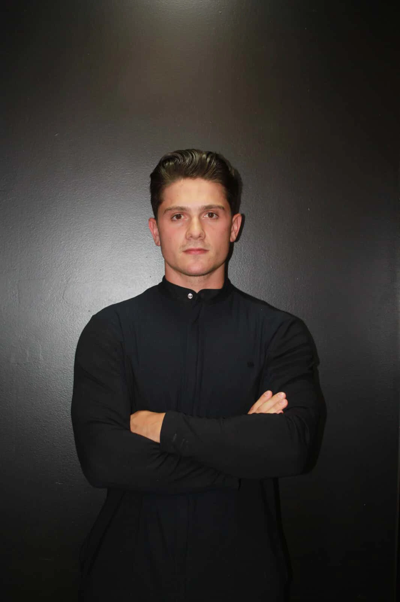

Protocolos integrados para controle da queda de cabelo, combate à alopecia e recuperação da espessura dos fios.
A terapia capilar clínica atua diretamente na raiz do folículo piloso, combinando microinfusão de ativos (MMP), ozonioterapia capilar desinflamatória e peptídeos estimuladores de crescimento.

Responsável TécnicoCirurgião Dentista (CRO-PR) & Biomédico Esteta (CRBM-PR). Professor de pós-graduação e mentor clínico internacional.
Respostas diretas sobre o procedimento realizado em Curitiba.
Planejamento individualizado e tecnologia de alta performance para valorizar seus traços com segurança e naturalidade.